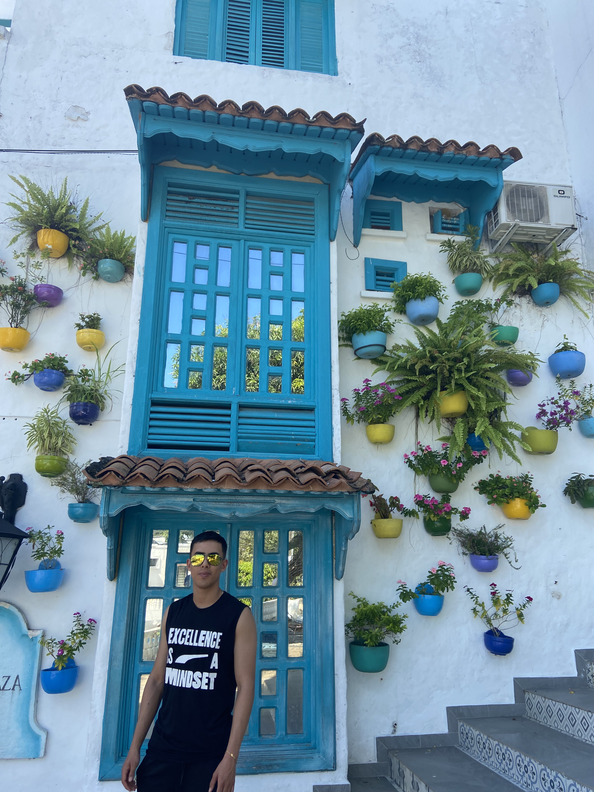

Datos personales
Alejor392@gmail.com
Telefono: 3057872521
Educación
- Tecnologo en Direccion Tecnica de Futbol (en curso), Universidad Sergio Arboleda, Fecha de Inicio:
febrero-2019, Fecha de finalizacion: julio-2023
Habilidades
- HTML
- CSS
- Capacidad para liderar
- Trabajo en equipo
- Comunicacion Efectiva
- Adaptabilidad
Experiencia laboral
Asistente tecnico de futbol-Escuela de Futbol Formacion Alemana
- Bogota, Colombia
- Año 2019
- Planificacion y ejecucion de las sesiones de entrenamiento.
- Preparacion de enseñanzas tecnicas basicas.
- Contribucion a la formacion deportiva y emocional de los jugadores, fomentando valores.
Trabajo actual
Propietario-Cafeteria Jugos la Montaña
Planificar, dirigir y administrar la gestion de compras, las finanzas y la contabilidad.
Hobbies
- Jugar futbol
- Ir al gimnasio
- Leer sobre Educacion Financiera